Project Overview
Project by Tom Eliot (tke), Shepard Emerson (semerson), Daniel Gorziglia (dgorzigl), Daniel Haddox (dhaddox)
Posters
Hardware PosterSoftware Poster
Concept
This product allows a racecar driver to more efficiently and safely operate the vehicle. The project integrates an ARM with a color LCD display, buttons, and various safety-critical status LEDs in order to properly relay the vehicle state from the CAN bus system to the driver.
Motivation
With the current dashboard design the driver has little knowledge of the possibly life-threatening state of the vehicle. Using our prototype system the driver will be able to easily understand the state of the vehicle while driving the race car in a competitive environment. Furthermore, using our remote telemetry system and SD card logs the crew and engineers will be able to easily diagnose and tune the vehicle.
Competitive Analysis
- AiM MXL2
- The AiM MXL2 is a dashlogging system used in go-karts, custom race cars, and in some formula SAE cars.
- Differentiators: ease of integration with rest of system, wireless telemetry system, user interface buttons/knobs, color screen 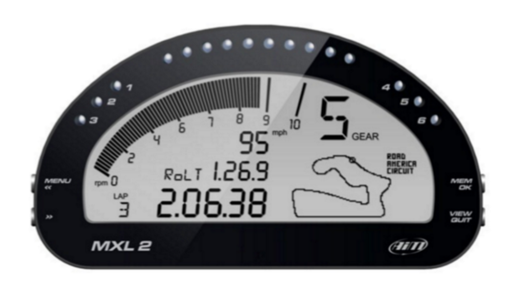
- MoTeC C187
- The MoTeC C187 is a dashboard and datalogging system used in automotive applications, with a large color display and display customization software.
- Differentiators: ease of integration with rest of system, wireless telemetry system, user interface buttons/knobs, size 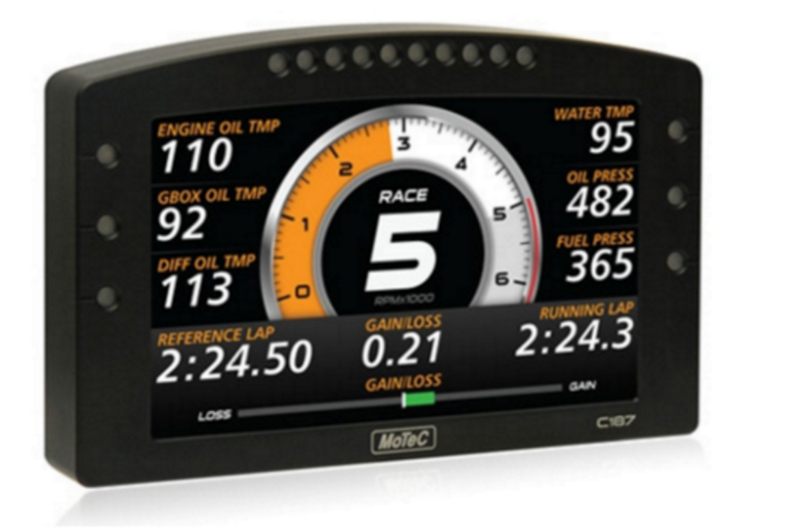
Requirements
The requirements for our project are divided amongst the two sub-systems: the driver interface and the telemetry module
Driver Interface Requirements
- The dashboard shall have an integrated display, 2.8” diagonal or larger.
-
The dashboard display shall always display:
- Battery state of charge (SOC)
- Current vehicle state (GLV on, high voltage enable, ready to drive, or error).
-
The dashboard display shall display while driving:
- Battery pack maximum cell temperature, max motor controller temperature.
- The dashboard shall be readable in all conditions, i.e. in bright sunlit environments and dark rainy environments.
-
The interface shall have the following interface controls on the steering wheel:
- A continuous clickable rotary encoder on the left side
- Four momentary buttons on the right side
-
The dashboard shall have the following interface controls on the main panel:
- Mode advance momentary button
- Mode regress momentary button
-
The dashboard shall have the following safety-critical LEDs:
- Indicator for BSPD (brake system plausibility device) error
- Indicator for IMD (insulation monitoring device) error
- Indicator software shutdown error (a physical relay that opens the shutdown circuit on the vehicle and de-energizes the tractive system)
- Indicator for software error (error state in software with energized tractive system)
- Prominent indicator for egress (in case something is very wrong and the driver needs to exit immediately)
-
The dashboard shall have the following additional LEDs:
- A configurable LED bar above the screen
- The dashboard shall be sealed against rain.
Technical Specifications
Hardware
- STM32F429ZIT6
- IS42S16400J
- TFT LCD
- SN65HVD1050
- RGB LED
Software
- Altium Designer (formula team sponsorship)
- Atmel Studio 7
- FreeRTOS
- Altia Designer 11
Protocols
- CAN
- SPI
- RGB LCD interface
- I2C
Architecture
Hardware system architecture
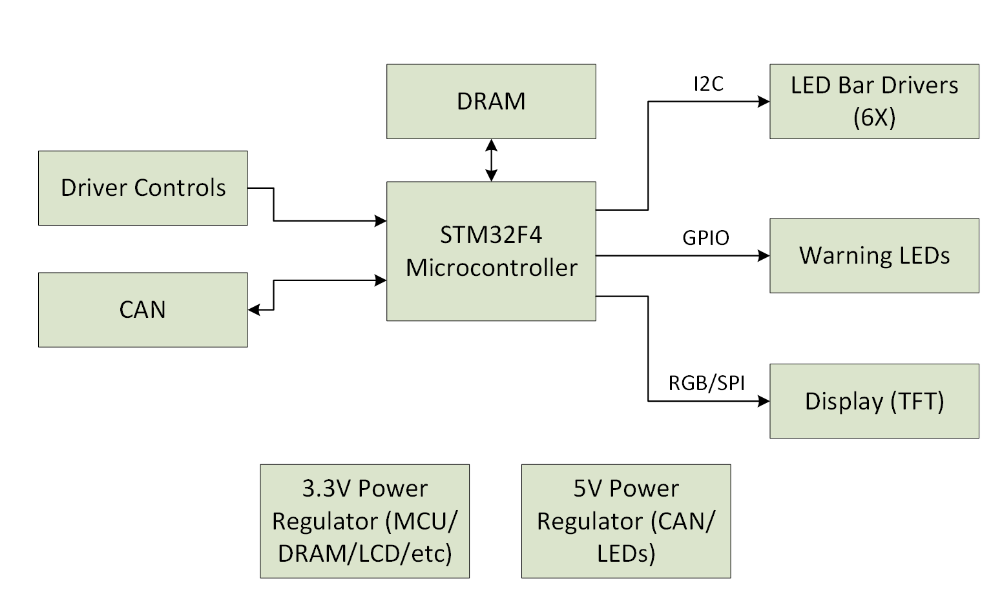Use Cases
User turns car on- User presses state advance button
- User waits for display and LEDs to show new state
- User repeats until system is in GLV on
- Car has an error condition
- DI shows error on LEDs and display
- Team identifies and remediates error
- User presses state advance button to turn car back on
- Dashboard reads state of charge from CANbus
- User reads SoC from display and LEDs
Interaction Diagram
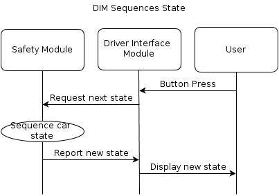Progress Updates
April 5, 2016
As we hit the 3 weeks to demo mark, things are heating up. Our group is firing on all cylinders. Schematics are finished, and PCB layout is near completion. We're taking shifts laying out and sleeping! The final review and OK2FAB will take place tomorrow, then we send out the board to Advanced Circuits for assembly. In parallel, software development and user interface design is taking place. We have a preliminary task schedule, and will be using FreeRTOS. 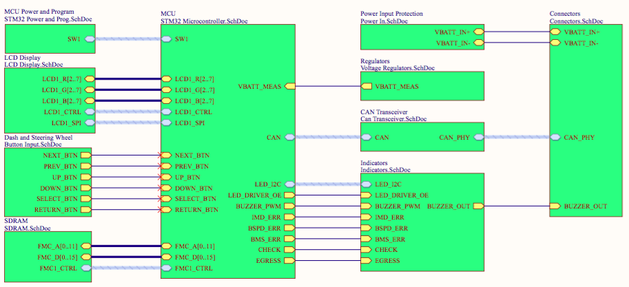 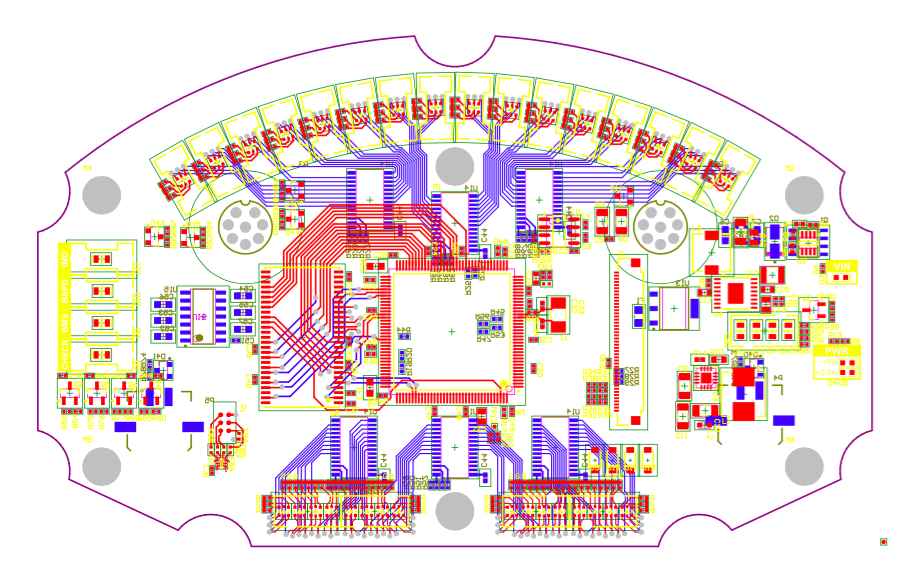 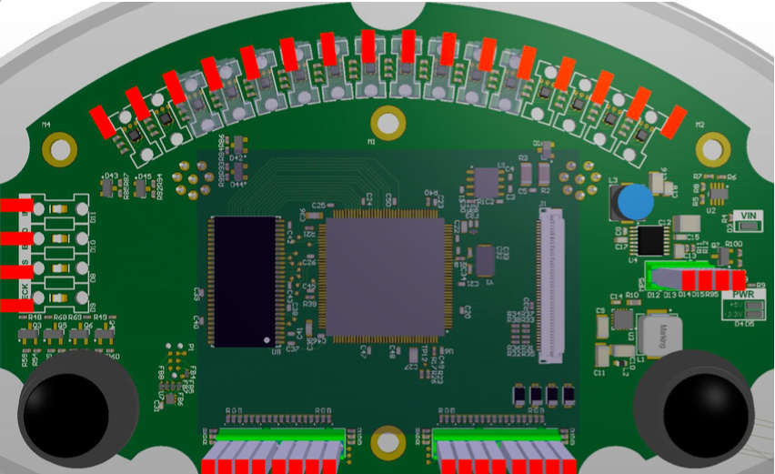 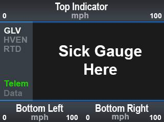Photos
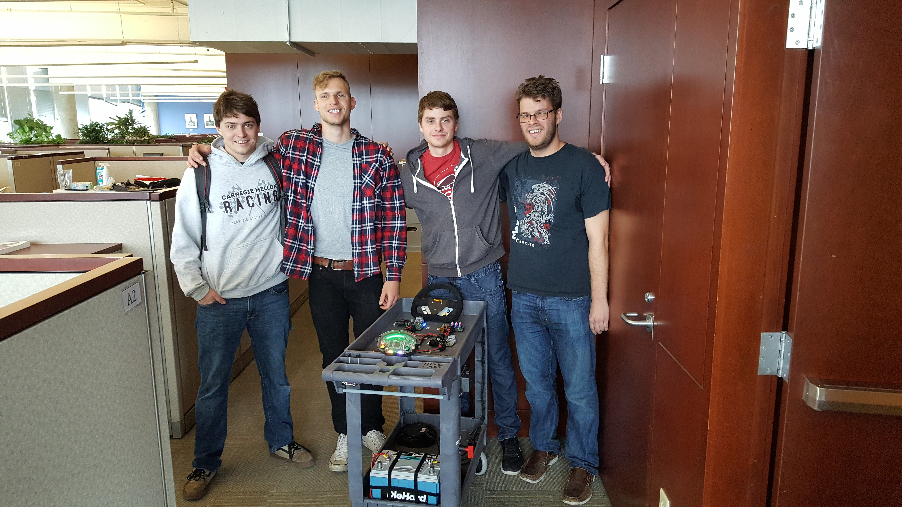 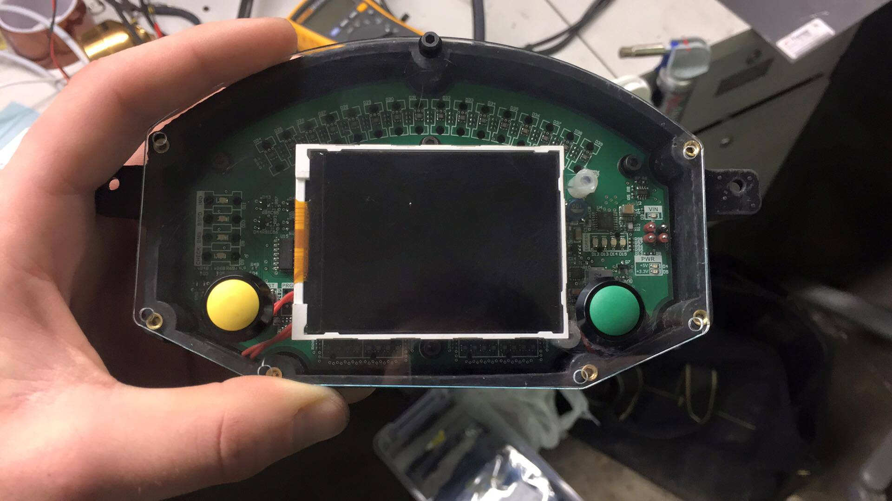


 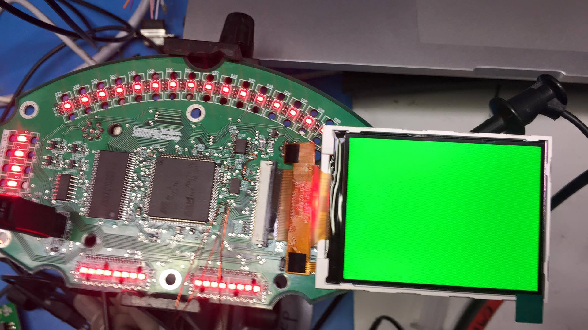
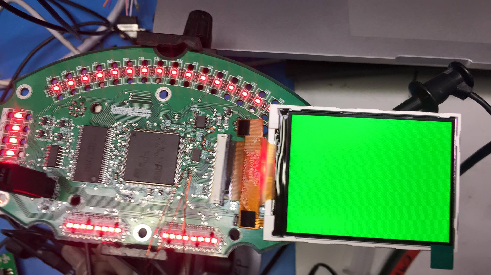
 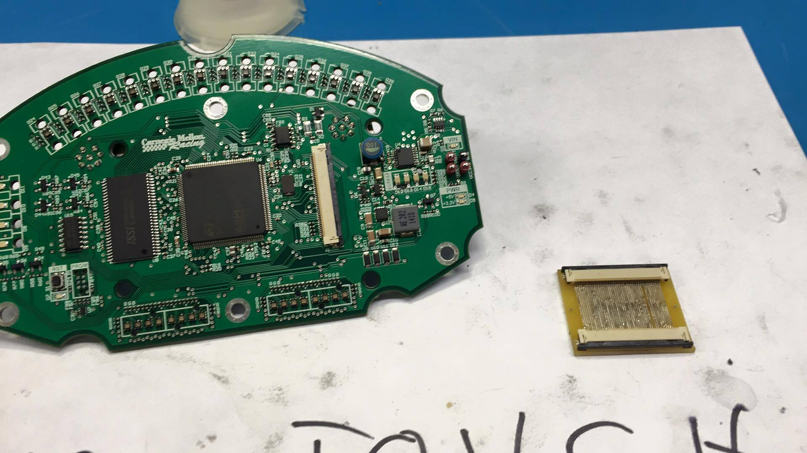
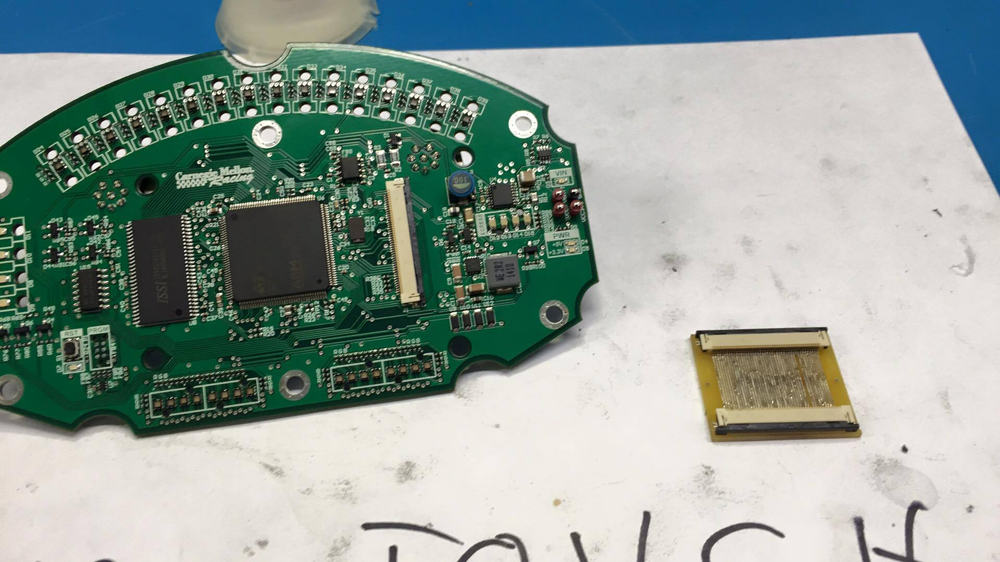